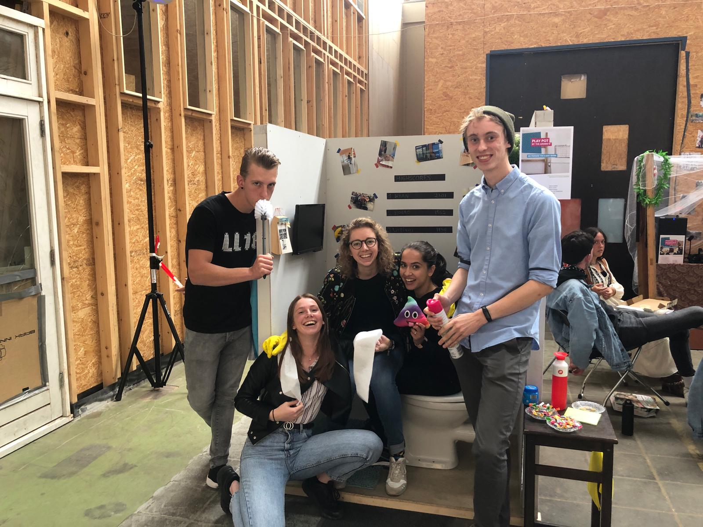

Labweken Reflect
Play Pot
HCI was oprecht een van de leukste projecten van de hele opleiding. Al was de alternatieve aanpak in het begin even wennen, heeft het mij ook nieuwe inzichten gegeven in de aanpak van creatieve projecten. Het werken en uitwerken van een concept vanuit interesse in een technologie of nieuwsgierigheid in plaats van een probleem of gebruikerscasus was een hele openbaring. De eerste 2 dagen had ik veel moeite met deze aanpak. Ik was op zoek naar een probleem, een situatie, een plek, een doelgroep, allemaal om een concept op aan te sluiten. Na ons WC-idee konden we die aanpak volledig van tafel gooien. “We hebben gewoon iets kunnen maken omdat we het leuk vonden, puur omdat we het zelf wilden!”.
Foto gemaakt door DjennaEen deel van het succes zit hem ook in de sfeer van ons groepje. Ten eerste zijn we allemaal aanpakkers, we willen aan de slag, dingen neerzetten, en progressie maken. We worden enthousiast van de technologieën en mogelijkheden, en vonden het niet erg om in de avonden (wellicht spreek ik voor mezelf) thuis verder te zoeken naar oplossingen van programmeerproblemen.
De verdelingen in het groepje ontstond ook vanzelf, waardoor iedereen een autonome rol kreeg. Men besloot zelf om ergens aan te gaan werken, we bespraken dit duidelijk in de standup en tussendoor, en er was geen enkele frictie binnen het uitvoeren van de taken. We waren een goed geoliede machine, en dat was ook nodig voor ons project. Al leek alles redelijk simpel, er zaten redelijk wat ambitieuze aspecten aan het project. Voor mezelf was dat het programmeren van het spel. Ik had het makkelijk aan kunnen pakken door een webbrowser met Chromium te gebruiken en de footcontroller te mappen als spatiebalk en pijltje naar beneden. Dat heb ik niet gedaan omdat ik wilde leren hoe processing werkt, hoe classes in Java werken, hoe ik Arduino met Processing kan laten communiceren en welke problemen hier allemaal bij komen kijken. Het was een onwijs leerzaam project voor mijn programmeer-skills.
Ik ben erg dankbaar voor het leuke groepje dat we gekregen hebben, de samenwerking die ontstond, en de kans om zo’n leuk project uit te mogen voeren. Aan het einde van het project heb ik ook tegen m’n groepje gezegd dat ik het zo weer zou doen, daar hoef ik geen moment aan te twijfelen.
